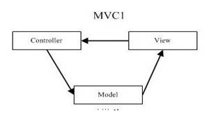
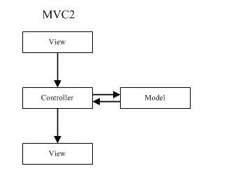

其实，在学习了JSP+Servlet之后，要想进一步了解深入学习，必须先明白两种模型，，MVC1和MVC2。下边来详细的讲述：
基本概念:
M:Model 程序的业务
V:View 程序的界面
C:Controller 程序的控制部分
1。 MVC1模式

view接受用户输入，并传递到controller。
controller统一进行处理命令，交由model处理具体的业务。
进过处理model更新后，通知view进行更新。
这种模式主要用于桌面程序，使用观察者模式实现，具体来说就是让View观察Model，而用户交互控制的地方用匿名类的方式统一放在controller中。
2.MVC2模式

view接受用户输入，并传递到controller。
controller统一进行处理命令，交由model处理具体的业务。
进过处理model更新后，controller会选一个view并把model内容传递(request，session)给它(forward)。然后view进行显示。
3.区别
可以看到，model是否能主动通知view就是二者的主要差别。桌面程序可以做到（其天生就具有的本领），采用的几乎都是MVC1的思想；然而Web程序由于Http协议的限制做不到，现在大部分仍然使用MVC2。
拓展：
mvc1 模式：
view接收用户输入，把命令传到controller
controller处理命令，更新model
model被更新后，会通知view需要update
view更新后向用户显示
mvc2 模式：
由于mvc1中，model可以通知view，然后view就可以被更新，这在windows程序中很常见，像MFC的frame-document-view架构，如果document改变了，他会主动通知view进行update
但是在web中，作为model的java bean更新后，无法调用作为view的jsp（而且view通常很多，需要选一个），因此改为mvc2模式：
view接收用户输入，把命令传到controller
controller处理命令，更新model
model被更新后，controller会选一个view并forward到这个jsp，附带把model放到request参数
这个view获得model然后显示
笔者总结：
MVC本身就是一个非常复杂的系统，所以采用MVC实现Web应用时，最好选一个现成的MVC框架，在此之下进行开发，从而取得事半功倍的效果。现在有很多可供使用的MVC框架，由于Struts有完整的文档并且相对来讲比较简单，所以用它开发MVC系统还是比较方便地。